This lab continues our Case Study CoffeeMate and once again, yet another major refactoring of the app, where we introduce the ability to make API calls to our CoffeeMate Web App using Volley and introduce some basic security using Google Sign-in.
As this lab builds directly on the previous lab, but requires a number of helper classes you can download the starter code for the lab here - CoffeeMate.5.0.
In this lab, you are required to do the following:
I would also like to bring to your attention our Coffee class as it has been refactored for use with the Web Service, we will be using this version of the model in this, and in subsequent Labs.
git clone https://android.googlesource.com/platform/frameworks/volleyor download my own volley archive here - volley.zip.
Eitherway, you then need to
File -> New Module, choose Import Existing Projectand Add the following dependencies to your 'build.gradle'
compile project(':volley')
compile 'com.google.code.gson:gson:2.4' // for Googles Gson JSON ParserAdd the necessary imports, clean the Project and the errors should be fixed, and if you run the app, you should get something like the following (depending on what's on the server at the time of making the api request)
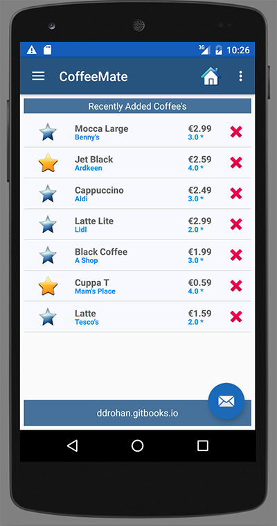
I would strongly recommend taking some time to have a look at the source code for this starter project - especially the API Calls and how we utilise a 'Callback Interface'. We've also had to refactor our CoffeeFragment slightly, specifically the onCreateView() due to the nature of making network requests and the impact on the UI (already discussed in the Lectures).
The remainder of this lab involves integrating Google+ Sign-in and using Volley to interact with the Web App.
As previously mentioned, we now want our CoffeeMate App to interact with a sister Web App (CoffeeMateWeb) so we need Google Sign-in support to allow us to connect to the Web App and Add/Edit/Delete/View Coffees stored on the Server.
What we want is something like this:
The user launches the app and (after a Splash Screen) is prompted to login, like so
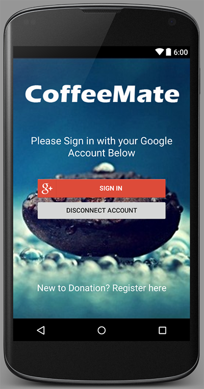
If the user hasn't previously logged in, they will be asked to choose an existing Account, or add a different account (that's what we'll do here)
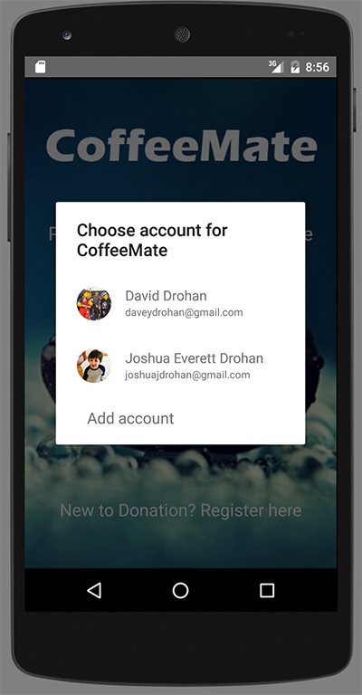
The user is then prompted for their Google credentials
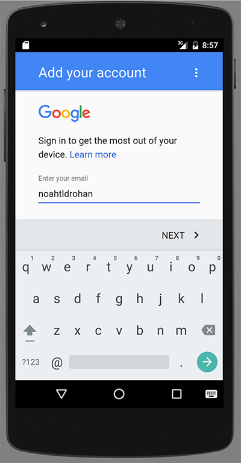
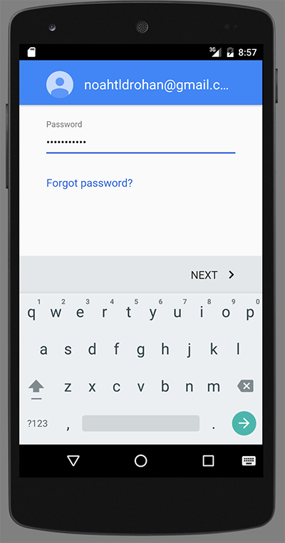
and then the app asked for certain permissions
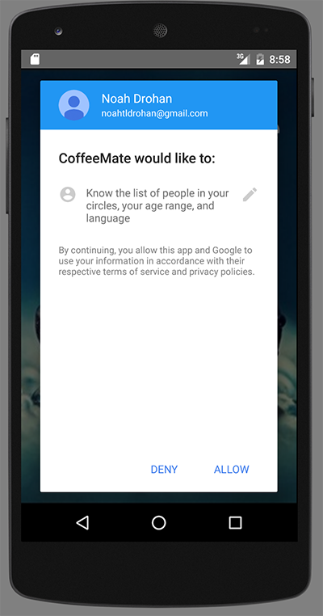
The additional account can now be chosen as the active Google account in the app
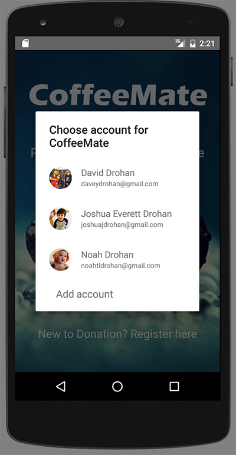
and we can display the users Google Profile pic, and email in the Navigation Drawer like so
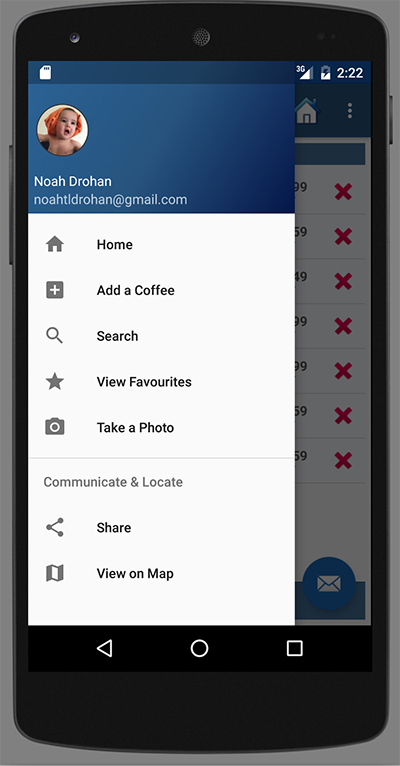
Before you can start integrating Google+ features in your own app, you must create a Google Developers Console project and initialize the GoogleApiClient within your app.
Before you begin using Google+ in your Android app, follow all of the steps to Start Integrating Google Sign-In into your Android App.
If you followed the steps above to add Google Sign-In to your app, you have already created a project in Google Developers Console. Now enable the Google+ API for that project to access Google+ features.
When the process completes, Google+ API appears in the list of enabled APIs. To access, select API Manager on the left sidebar menu, then select the Enabled APIs tab.
There's quite a lot of code (relatively speaking) to get this off the ground, so we'll use this step as more of a 'configuration' step, and hopefully once you've completed this, you'll be able to 'Go Green' on your own app :-) (Reduce,Reuse,Recycle my code).
The first thing you need to do is introduce the following variables into your CoffeeMateApp application class
/* Client used to interact with Google APIs. */
public GoogleApiClient mGoogleApiClient;
public GoogleSignInOptions mGoogleSignInOptions;
public boolean signedIn = false;
public String googleToken;
public String googleName;
public String googleMail;
public String googlePhotoURL;
public Bitmap googlePhoto;
public int drawerID = 0;We'll be phasing out our Base class eventually, so the first step is keeping a reference to our application object in Home, like so
public CoffeeMateApp app = CoffeeMateApp.getInstance();Make sure you remove the reference from Base and fix any errors.
now bring in the following method into your Home activity class
// [START signOut]
public void menuSignOut(MenuItem m) {
//https://stackoverflow.com/questions/38039320/googleapiclient-is-not-connected-yet-on-logout-when-using-firebase-auth-with-g
app.mGoogleApiClient.connect();
app.mGoogleApiClient.registerConnectionCallbacks(new GoogleApiClient.ConnectionCallbacks() {
@Override
public void onConnected(@Nullable Bundle bundle) {
//FirebaseAuth.getInstance().signOut();
if(app.mGoogleApiClient.isConnected()) {
Auth.GoogleSignInApi.signOut(app.mGoogleApiClient).setResultCallback(new ResultCallback<Status>() {
@Override
public void onResult(@NonNull Status status) {
if (status.isSuccess()) {
Log.v("coffeemate", "User Logged out");
Intent intent = new Intent(Home.this, Login.class);
startActivity(intent);
finish();
}
}
});
}
}
@Override
public void onConnectionSuspended(int i) {
Log.d("coffeemate", "Google API Client Connection Suspended");
}
});
}
// [END signOut]Then, bring in the following resources login.zip into your own CoffeeMate project (and store in the relevant folders) and fix/import any errors. You may need to revisit the Nav Drawer layout to rename some widgets.
Also, just confirm that you have the following permissions in your manifest file
<uses-permission android:name="android.permission.INTERNET" />and the following in your build.gradle
compile 'com.google.android.gms:play-services-auth:9.0.0'and the following in your strings.xml
<string name="linktoRegister">New to CoffeeMate?\n Register at\n <a href='http://coffeemateweb.herokuapp.com'>http://coffeemateweb.herokuapp.com</a></string>Next, bring in a 'Logout' Option in your Menu, like so
<item
android:id="@+id/menu_signout"
android:title="Logout"
android:orderInCategory="100"
app:showAsAction="never"
android:onClick="menuSignOut"/>Now, introduce the following variable in your Home Activity
private ImageView googlePhoto;and the following code in your onCreate() method BEFORE your fragment transaction
//SetUp GooglePhoto and Email for Drawer here
googlePhoto = (ImageView)navigationView.getHeaderView(0).findViewById(R.id.googlephoto);
CoffeeApi.getGooglePhoto(app.googlePhotoURL,googlePhoto);
TextView googleName = (TextView)navigationView.getHeaderView(0).findViewById(R.id.googlename);
googleName.setText(app.googleName);
TextView googleMail = (TextView)navigationView.getHeaderView(0).findViewById(R.id.googlemail);
googleMail.setText(app.googleMail);You'll get an error on
CoffeeApi.getGooglePhoto(app.googlePhotoURL,googlePhoto);so add the following method to your CoffeeApi class
public static void getGooglePhoto(String url,final ImageView googlePhoto)
{
ImageRequest imgRequest = new ImageRequest(url,
new Response.Listener<Bitmap>() {
@Override public void onResponse(Bitmap response) {
Base.googlePhoto = response;
googlePhoto.setImageBitmap(Base.googlePhoto);
} }, 0, 0, ImageView.ScaleType.FIT_XY, Bitmap.Config.ARGB_8888,
new Response.ErrorListener() {
@Override public void onErrorResponse(VolleyError error) {
System.out.println("Something went wrong!");
error.printStackTrace();
}
});
// Add the request to the queue
app.add(imgRequest);There's one other small step, but a vital one, to get your Login Screen loading after your splash Screen - and I'll leave that up to you.
Once you get the app running and a user Signing in - you'll see that the list can be downloaded as before, and the users Google credentials are displayed in the Nav Drawer - but nothing else works properly - the rest of the lab involves refactoring our code to make API requests on the Server to Delete/Update etc.
This is now a good time to remove our Base class altogether, but we do need to move some of the functionality into our Home class, such as the menu inflation and event handling, so have a go at that refactoring now.
To save time, and if you ran into any configuration issues, here's a version of CoffeeMate up to this point CoffeeMate.5.0.sofar.zip
EDIT : if you call .requestProfile() like so
app.mGoogleSignInOptions = new GoogleSignInOptions.Builder(GoogleSignInOptions.DEFAULT_SIGN_IN)
.requestEmail()
.requestProfile()
.build();you don't need to use
@Override
public void onResume()
{
super.onResume();
googlePhoto.setImageBitmap(app.googlePhoto);
}in your Home activity.
At the moment the user is seeing a list of all coffees stored on the server, so let's make the app a bit more user friendly and download only the users coffees.
This is actually a very simple step, (and may be done already!) all we need to do is modify our APi call and add the users Google credentials to the request (which we already have) like so:
CoffeeApi.get("/coffees/" + app.googleToken);so now when we run the app we only see the current users coffees - here's mine (at the time of the request)
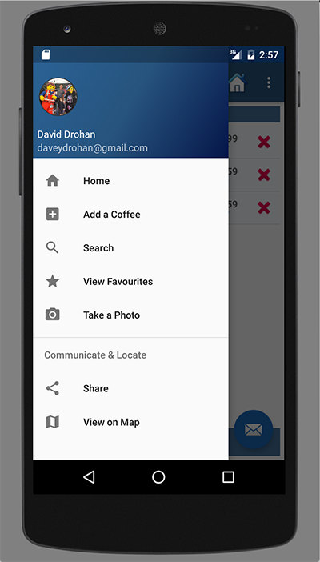
and
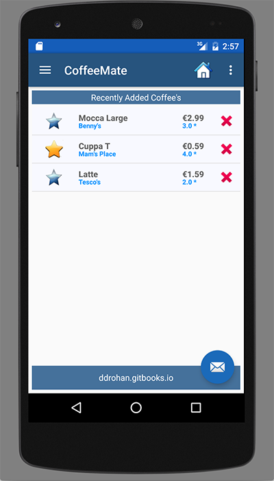
You can confirm your own coffees (if you've added some already) by visiting the webapp and sign in with your Google details.
At this stage, we've made a few simple GET requests on the Server - now let's make some POST Requests and add a coffee to our list.
The first thing we need to do is update our CoffeeApi class and add in a new method to allow us to POST our coffee to the server, so open up your CoffeeApi.java and add the following:
public static void post(String url,Coffee aCoffee) {
Log.v(TAG, "POSTing to : " + url);
Type objType = new TypeToken<Coffee>(){}.getType();
String json = new Gson().toJson(aCoffee, objType);
JSONObject jsonObject = null;
try {
jsonObject = new JSONObject(json);
}
catch (JSONException e) {
e.printStackTrace();
}
JsonObjectRequest gsonRequest = new JsonObjectRequest( Request.Method.POST, hostURL + url, jsonObject,
new Response.Listener<JSONObject>() {
@Override
public void onResponse(JSONObject response) {
Log.v(TAG, "insert new Coffee " + response.toString());
}
},
new Response.ErrorListener() {
@Override
public void onErrorResponse(VolleyError error) { // Handle Error
Log.v(TAG, "Unable to insert new Coffee");
}
}) {
@Override
public Map<String, String> getHeaders() throws AuthFailureError {
HashMap<String, String> headers = new HashMap<String, String>();
headers.put("Content-Type", "application/json; charset=utf-8");
return headers;
}
};
// Add the request to the queue
app.add(gsonRequest);
}Fix any import errors you have and take some time to investigate how this method achieves our goal of
You can always ask the Lecturer for some more detail if necessary.
The next thing we need to do is refactor our Add Fragment and integrate our APi class so open up your AddFragment.java and have a go at implementing what we need.
There's actually very little to this so if you've added the necessary code correctly, you should be able to add a coffee in the same way as in CoffeeMate.4.0 but this time, the coffee is added to the list of your coffees on the server NOT on the device (via the database).
And don't worry, the solution is next :)
Before we make a start at updating a coffee, here is the line of code necessary for adding a coffee (replacing our database insert call)
CoffeeApi.post("/coffees/" + app.googleToken,c);Unfortunately, updating a coffee isn't as simple and straightforward as the last step, in that we need to
display the coffee details (that the user has selected) on the Edit Screen via a GET request
send a PUT request to update our coffee on the server
return the user to the screen they were on before they chose to edit their coffee (NOT the Home Screen as with the 'Add' option)
So, the first thing to do (as I've made a few changes to the following) is replace your current CoffeeApi class with this one
package ie.cm.api;
import android.app.Fragment;
import android.app.ProgressDialog;
import android.graphics.Bitmap;
import android.support.v4.widget.SwipeRefreshLayout;
import android.util.Log;
import android.widget.ImageView;
import com.android.volley.AuthFailureError;
import com.android.volley.Request;
import com.android.volley.Response;
import com.android.volley.VolleyError;
import com.android.volley.toolbox.ImageRequest;
import com.android.volley.toolbox.JsonObjectRequest;
import com.android.volley.toolbox.StringRequest;
import com.google.gson.Gson;
import com.google.gson.reflect.TypeToken;
import org.json.JSONException;
import org.json.JSONObject;
import java.lang.reflect.Type;
import java.util.HashMap;
import java.util.List;
import java.util.Map;
import ie.cm.main.CoffeeMateApp;
import ie.cm.models.Coffee;
public class CoffeeApi {
private static final String hostURL = "http://coffeemateweb.herokuapp.com";
private static final String LocalhostURL = "http://192.168.0.13:3000";
private static VolleyListener vListener;
public static CoffeeMateApp app = CoffeeMateApp.getInstance();
public static final String TAG = CoffeeMateApp.class.getName();
public static ProgressDialog dialog;
public static void attachListener(VolleyListener fragment) {
vListener = fragment;
}
public static void detachListener() {
vListener = null;
}
public static void attachDialog(ProgressDialog mDialog) {
dialog = mDialog;
}
private static void showDialog(String message) {
dialog.setMessage(message);
if (!dialog.isShowing())
dialog.show();
}
private static void hideDialog() {
if (dialog.isShowing())
dialog.dismiss();
}
///////////////////////////////////////////////////////////////////////////////////////////////
public static void getAll(String url, final SwipeRefreshLayout mSwipeRefreshLayout) {
Log.v(TAG, "GETing All Coffees from " + url);
showDialog("Downloading Coffees...");
// Request a string response
StringRequest stringRequest = new StringRequest(Request.Method.GET, hostURL + url,
new Response.Listener<String>() {
@Override
public void onResponse(String response) {
// Result handling
List<Coffee> result = null;
Type collectionType = new TypeToken<List<Coffee>>(){}.getType();
result = new Gson().fromJson(response, collectionType);
vListener.setList(result);
mSwipeRefreshLayout.setRefreshing(false);
hideDialog();
}
}, new Response.ErrorListener() {
@Override
public void onErrorResponse(VolleyError error) {
// Error handling
Log.v(TAG,"Something went wrong with GET ALL!");
mSwipeRefreshLayout.setRefreshing(false);
error.printStackTrace();
}
});
// Add the request to the queue
app.add(stringRequest);
}
///////////////////////////////////////////////////////////////////////////////////////////////
public static void get(String url) {
showDialog("Downloading all User Coffees...");
// Request a string response
StringRequest stringRequest = new StringRequest(Request.Method.GET, hostURL + url,
new Response.Listener<String>() {
@Override
public void onResponse(String response) {
// Result handling
Coffee result = null;
Type objType = new TypeToken<Coffee>(){}.getType();
result = new Gson().fromJson(response, objType);
vListener.setCoffee(result);
hideDialog();
}
}, new Response.ErrorListener() {
@Override
public void onErrorResponse(VolleyError error) {
// Error handling
Log.v(TAG,"Something went wrong wit GET!");
error.printStackTrace();
}
});
// Add the request to the queue
app.add(stringRequest);
}
///////////////////////////////////////////////////////////////////////////////////////////////
public static void post(String url,Coffee aCoffee) {
Log.v(TAG, "POSTing to : " + url);
showDialog("Adding a Coffee...");
Type objType = new TypeToken<Coffee>(){}.getType();
String json = new Gson().toJson(aCoffee, objType);
JSONObject jsonObject = null;
try {
jsonObject = new JSONObject(json);
} catch (JSONException e) {
e.printStackTrace();
}
JsonObjectRequest gsonRequest = new JsonObjectRequest( Request.Method.POST, hostURL + url,
jsonObject,
new Response.Listener<JSONObject>() {
@Override
public void onResponse(JSONObject response) {
hideDialog();
Log.v(TAG, "insert new Coffee " + response.toString());
}
},
new Response.ErrorListener() {
@Override
public void onErrorResponse(VolleyError error) {
// Handle Error
Log.v(TAG, "Unable to insert new Coffee");
}
}) {
@Override
public Map<String, String> getHeaders() throws AuthFailureError {
HashMap<String, String> headers = new HashMap<String, String>();
headers.put("Content-Type", "application/json; charset=utf-8");
return headers;
}
};
// Add the request to the queue
app.add(gsonRequest);
}
///////////////////////////////////////////////////////////////////////////////////////////////
public static void put(String url,Coffee aCoffee) {
Log.v(TAG, "PUTing to : " + url);
showDialog("Updating a Coffee...");
Type objType = new TypeToken<Coffee>(){}.getType();
String json = new Gson().toJson(aCoffee, objType);
JSONObject jsonObject = null;
try {
jsonObject = new JSONObject(json);
} catch (JSONException e) {
e.printStackTrace();
}
JsonObjectRequest gsonRequest = new JsonObjectRequest( Request.Method.PUT, hostURL + url,
jsonObject,
new Response.Listener<JSONObject>() {
@Override
public void onResponse(JSONObject response) {
// Result handling
Coffee result = null;
Type objType = new TypeToken<Coffee>(){}.getType();
try {
result = new Gson().fromJson(response.getString("data"), objType);
} catch (JSONException e) {
e.printStackTrace();
}
vListener.setCoffee(result);
hideDialog();
Log.v(TAG, "Updating a Coffee successful with :" + result);
}
},
new Response.ErrorListener() {
@Override
public void onErrorResponse(VolleyError error) {
// Handle Error
Log.v(TAG, "Unable to update Coffee with error : " + error.getMessage());
}
}) {
@Override
public Map<String, String> getHeaders() throws AuthFailureError {
HashMap<String, String> headers = new HashMap<String, String>();
headers.put("Content-Type", "application/json; charset=utf-8");
return headers;
}
};
// Add the request to the queue
app.add(gsonRequest);
}
///////////////////////////////////////////////////////////////////////////////////////////////
public static void delete(String url) {
Log.v(TAG, "DELETEing from " + url);
// Request a string response
StringRequest stringRequest = new StringRequest(Request.Method.DELETE, hostURL + url,
new Response.Listener<String>() {
@Override
public void onResponse(String response) {
// Result handling
Log.v(TAG, "DELETE success " + response);
}
}, new Response.ErrorListener() {
@Override
public void onErrorResponse(VolleyError error) {
// Error handling
Log.v(TAG,"Something went wrong with DELETE!");
error.printStackTrace();
}
});
// Add the request to the queue
app.add(stringRequest);
}
///////////////////////////////////////////////////////////////////////////////////////////////
public static void getGooglePhoto(String url,final ImageView googlePhoto) {
ImageRequest imgRequest = new ImageRequest(url,
new Response.Listener<Bitmap>() {
@Override
public void onResponse(Bitmap response) {
app.googlePhoto = response;
googlePhoto.setImageBitmap(app.googlePhoto);
}
}, 0, 0, ImageView.ScaleType.FIT_XY, Bitmap.Config.ARGB_8888, new Response.ErrorListener() {
@Override
public void onErrorResponse(VolleyError error) {
System.out.println("Something went wrong!");
error.printStackTrace();
}
});
// Add the request to the queue
app.add(imgRequest);
}
}and your VolleyListener with this
public interface VolleyListener {
void setList(List list);
void setCoffee(Coffee c);
}You'll get a few errors, but don't worry, we'll fix those now, so go ahead and open up your CoffeeFragment.java and replace your current class with this one
package ie.cm.fragments;
import android.app.AlertDialog;
import android.app.Fragment;
import android.app.FragmentTransaction;
import android.content.Context;
import android.content.DialogInterface;
import android.os.Bundle;
import android.support.v4.widget.SwipeRefreshLayout;
import android.view.ActionMode;
import android.view.LayoutInflater;
import android.view.Menu;
import android.view.MenuInflater;
import android.view.MenuItem;
import android.view.View;
import android.view.ViewGroup;
import android.widget.AbsListView;
import android.widget.AdapterView;
import android.widget.ListView;
import android.widget.TextView;
import java.util.List;
import ie.cm.R;
import ie.cm.adapters.CoffeeFilter;
import ie.cm.adapters.CoffeeListAdapter;
import ie.cm.api.CoffeeApi;
import ie.cm.api.VolleyListener;
import ie.cm.main.CoffeeMateApp;
import ie.cm.models.Coffee;
public class CoffeeFragment extends Fragment implements AdapterView.OnItemClickListener,
View.OnClickListener,
AbsListView.MultiChoiceModeListener,
VolleyListener
{
protected static CoffeeListAdapter listAdapter;
protected ListView listView;
protected CoffeeFilter coffeeFilter;
public boolean favourites = false;
protected TextView titleBar;
protected SwipeRefreshLayout mSwipeRefreshLayout;
public CoffeeMateApp app = CoffeeMateApp.getInstance();
public CoffeeFragment() {
// Required empty public constructor
}
public static CoffeeFragment newInstance() {
CoffeeFragment fragment = new CoffeeFragment();
return fragment;
}
@Override
public void onAttach(Context context)
{
super.onAttach(context);
CoffeeApi.attachListener(this);
}
@Override
public void onCreate(Bundle savedInstanceState) {
super.onCreate(savedInstanceState);
}
@Override
public View onCreateView(LayoutInflater inflater, ViewGroup container,
Bundle savedInstanceState) {
// Inflate the layout for this fragment
View v = null;
v = inflater.inflate(R.layout.fragment_home, container, false);
listView = (ListView) v.findViewById(R.id.coffeeList);
mSwipeRefreshLayout = (SwipeRefreshLayout) v.findViewById(R.id.coffee_swipe_refresh_layout);
setSwipeRefreshLayout();
//CoffeeApi.getAll("/coffees/" + app.googleToken, mSwipeRefreshLayout);
return v;
}
protected void setSwipeRefreshLayout()
{
mSwipeRefreshLayout.setOnRefreshListener(new SwipeRefreshLayout.OnRefreshListener() {
@Override
public void onRefresh() {
CoffeeApi.getAll("/coffees/" + app.googleToken, mSwipeRefreshLayout);
}
});
}
@Override
public void onResume() {
super.onResume();
CoffeeApi.attachListener(this);
CoffeeApi.getAll("/coffees/" + app.googleToken, mSwipeRefreshLayout);
}
@Override
public void onPause() {
super.onPause();
CoffeeApi.detachListener();
}
@Override
public void setList(List list) {
app.coffeeList = list;
updateUI();
}
@Override
public void setCoffee(Coffee c) {}
public void updateUI() {
titleBar = (TextView)getActivity().findViewById(R.id.recentAddedBarTextView);
titleBar.setText(R.string.recentlyViewedLbl);
listAdapter = new CoffeeListAdapter(getActivity(), this, app.coffeeList);
coffeeFilter = new CoffeeFilter(app.coffeeList,"all",listAdapter);
setListView(listView);
if (favourites) {
titleBar.setText(R.string.favouritesCoffeeLbl);
((TextView)getActivity().findViewById(R.id.empty_list_view)).setText(R.string.favouritesEmptyMessage);
coffeeFilter.setFilter("favourites"); // Set the filter text field from 'all' to 'favourites'
coffeeFilter.filter(null); // Filter the data, but don't use any prefix
}
if(app.coffeeList.isEmpty())
((TextView)getActivity().findViewById(R.id.empty_list_view)).setText(R.string.recentlyViewedEmptyMessage);
else
((TextView)getActivity().findViewById(R.id.empty_list_view)).setText("");
listAdapter.notifyDataSetChanged(); // Update the adapter
}
public void setListView(ListView listview) {
listview.setChoiceMode(ListView.CHOICE_MODE_MULTIPLE_MODAL);
listview.setMultiChoiceModeListener(this);
listview.setAdapter (listAdapter);
listview.setOnItemClickListener(this);
listview.setEmptyView(getActivity().findViewById(R.id.empty_list_view));
}
@Override
public void onDetach() {
super.onDetach();
CoffeeApi.detachListener();
}
@Override
public void onStart()
{
super.onStart();
}
@Override
public void onClick(View view)
{
if (view.getTag() instanceof Coffee)
{
onCoffeeDelete ((Coffee) view.getTag());
}
}
public void onCoffeeDelete(final Coffee coffee)
{
String stringName = coffee.name;
AlertDialog.Builder builder = new AlertDialog.Builder(getActivity());
builder.setMessage("Are you sure you want to Delete the \'Coffee\' " + stringName + "?");
builder.setCancelable(false);
builder.setPositiveButton("Yes", new DialogInterface.OnClickListener()
{
public void onClick(DialogInterface dialog, int id)
{
CoffeeApi.delete("/coffees/" + app.googleToken +"/" + coffee._id);
CoffeeApi.getAll("/coffees/" + app.googleToken, mSwipeRefreshLayout);
}
}).setNegativeButton("No", new DialogInterface.OnClickListener()
{
public void onClick(DialogInterface dialog, int id)
{
dialog.cancel();
}
});
AlertDialog alert = builder.create();
alert.show();
}
@Override
public void onItemClick(AdapterView<?> parent, View view, int position, long id) {
Bundle activityInfo = new Bundle();
activityInfo.putString("coffeeID", (String) view.getTag());
FragmentTransaction ft = getFragmentManager().beginTransaction();
Fragment fragment = EditFragment.newInstance(activityInfo);
ft.replace(R.id.homeFrame, fragment);
ft.addToBackStack(null);
ft.commit();
}
/* ************ MultiChoiceModeListener methods (begin) *********** */
@Override
public boolean onCreateActionMode(ActionMode actionMode, Menu menu)
{
MenuInflater inflater = actionMode.getMenuInflater();
inflater.inflate(R.menu.delete_list_context, menu);
return true;
}
@Override
public boolean onPrepareActionMode(ActionMode actionMode, Menu menu)
{
return false;
}
@Override
public boolean onActionItemClicked(ActionMode actionMode, MenuItem menuItem)
{
switch (menuItem.getItemId())
{
case R.id.menu_item_delete_coffee:
deleteCoffees(actionMode);
return true;
default:
return false;
}
}
public void deleteCoffees(ActionMode actionMode)
{
for (int i = listAdapter.getCount() - 1; i >= 0; i--) {
if (listView.isItemChecked(i)) {
CoffeeApi.delete("/coffees/" + app.googleToken +"/" + listAdapter.getItem(i)._id);
}
CoffeeApi.getAll("/coffees/" + app.googleToken, mSwipeRefreshLayout);
}
actionMode.finish();
if (favourites) {
//Update the filters data
coffeeFilter = new CoffeeFilter(app.coffeeList,"favourites",listAdapter);
coffeeFilter.filter(null);
}
listAdapter.notifyDataSetChanged();
}
@Override
public void onDestroyActionMode(ActionMode actionMode)
{}
@Override
public void onItemCheckedStateChanged(ActionMode actionMode, int position, long id, boolean checked)
{}
/* ************ MultiChoiceModeListener methods (end) *********** */
}I strongly recommend that you take some time and review this class and compare it to your previous class to understand the changes that have been made, particularly the introduction of the SwipeRefreshLayout and the refactoring of the onItemClick() method.
Now, open your EditFragment and ensure it implements our VolleyListener interface (and fix any errors). Then ensure your variable instances matches the following
private OnFragmentInteractionListener mListener;
TextView titleBar, titleName, titleShop;
Coffee aCoffee;
Boolean isFavourite;
EditText name, shop, price;
RatingBar ratingBar;
ImageView favouriteImage;
String coffeeID;
public CoffeeMateApp app = CoffeeMateApp.getInstance();and your onCreate() method now should look like this
@Override
public void onCreate(Bundle savedInstanceState) {
super.onCreate(savedInstanceState);
if(getArguments() != null) {
coffeeID = getArguments().getString("coffeeID");
}
}You may need to make some minor changes to your CoffeeFragment class, depending on how closely you've been following this particular lab.
Now, as we need to reuse the widgets on our layout we need to refactor our onCreateView(), and using the variables you've just declared have a go at a revised version of the method, where you specifically bind to each widget on the layout (not just reference it).
Using the coffeeID from your onCreate() (above) see can you code correctly the APi call to retrieve a single coffee from the server? (All you need to do is append the coffee id to the call made to get all coffees).
Before you get to actually update the coffee on the server, it's probably worth testing your app at this point to see if everything is working correctly, so run your app and confirm you get to see the coffee details on the Edit Screen once the user has selected a particular coffee to edit, like so
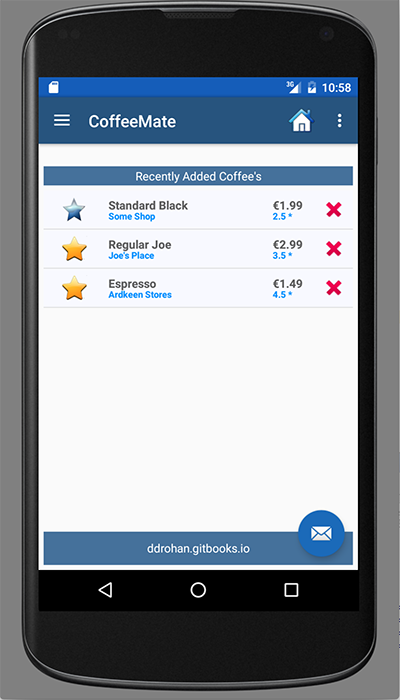
and if the user selects "Regular Joe"
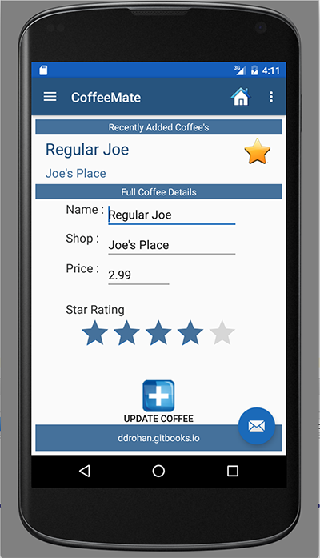
You're probably not seeing anything (or maybe your app even crashed?) and this is (probably) because you haven't implemented the interface methods correctly (or at all!) and you haven't allowed for updating the UI with the coffee details AFTER the individual coffee details have been retrieved.
We'll have a look at the solution in the next step but try and complete it yourself first by referring to how we achieved our goal in our CoffeeFragment class (and we briefly discussed it in the lectures).
As promised, here's the code necessary for initially retrieving a coffee from the server and displaying it on the Edit Screen
@Override
public void setList(List list) {
app.coffeeList = list;
}
@Override
public void setCoffee(Coffee c) {
aCoffee = c;
updateUI();
}
public void updateUI() {
titleName.setText(aCoffee.name);
titleShop.setText(aCoffee.shop);
name.setText(aCoffee.name);
shop.setText(aCoffee.shop);
price.setText(""+aCoffee.price);
ratingBar.setRating((float)aCoffee.rating);
if (aCoffee.favourite == true) {
favouriteImage.setImageResource(R.drawable.ic_favourite_on);
isFavourite = true;
}
else {
favouriteImage.setImageResource(R.drawable.ic_favourite_off);
isFavourite = false;
}
}Run your app again to confirm everything is as expected.
The last part of updating a coffee, is just that - PUT ing our data back on the server and there's actually not too much to this. To get you started, here's the APi call you'll need to make
CoffeeApi.put("/coffees/" + app.googleToken +"/" + aCoffee._id, aCoffee);but the existing update() method needs a small bit of refactoring so see if you can make the necessary changes to get everything working.
Also, you may find the following code snippet useful
if (getFragmentManager().getBackStackEntryCount() > 0) {
getFragmentManager().popBackStack();
return;
}Once that's done you can move onto the next step - Deleting a Coffee.
As we already have all the necessary code in place from previous versions of CoffeeMate, AND we have a full APi class available to us, this step is very simple - we just need to change our delete method(s) to delete the specific coffee (or multiple coffees) from the server, and not the database, as is currently the case.
we achieve deleting a single coffee by calling our CoffeeApi 'delete' method like so
CoffeeApi.delete("/coffees/" + app.googleToken +"/" + coffee._id);so see if you can work out where this call should go, and what code it should replace?
We can use the same method call to delete multiple coffees so try and have a go at implementing this feature (which we covered in the lectures).
At this Stage your CoffeeMate App should be able to View/Add/Delete & Update coffees, and view your favourite coffees (like before), all on the server.
Now, because we introduced a SwipeRefreshLayout, we need to make some modifications to our 'Search' option so you need to ensure that your fragment_search layout now has the following (around the ListView)
<android.support.v4.widget.SwipeRefreshLayout
android:id="@+id/coffee_swipe_refresh_layout"
android:layout_width="match_parent"
android:layout_height="107dp"
android:layout_alignParentStart="true"
android:layout_below="@+id/recentAddedBarTextView"
android:layout_alignParentBottom="true">
<ListView android:id="@+id/coffeeList"
android:layout_width="match_parent"
android:layout_height="match_parent"
android:layout_gravity="right|bottom">
</ListView>
</android.support.v4.widget.SwipeRefreshLayout>and in your Fragment you bind to the SwipeRefreshLayout and set it like so
mSwipeRefreshLayout = (SwipeRefreshLayout) v.findViewById(R.id.coffee_swipe_refresh_layout);
setSwipeRefreshLayout();Run your app once again and make a few changes on the server and test out the swipe refresh to confirm you've completed this lab successfully - Well Done!
This is a solution which uses a Web Service and Volley with Google Sign-in to manage the Coffees in the app: